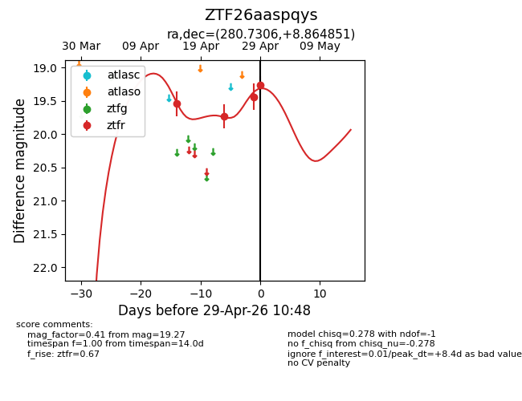
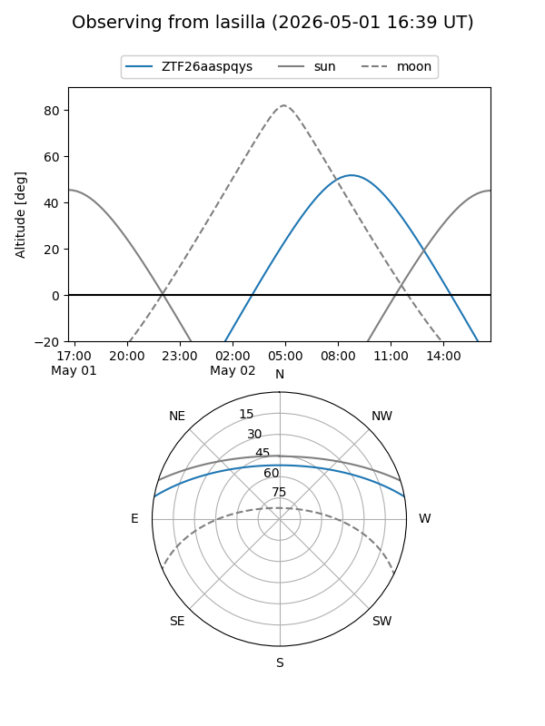
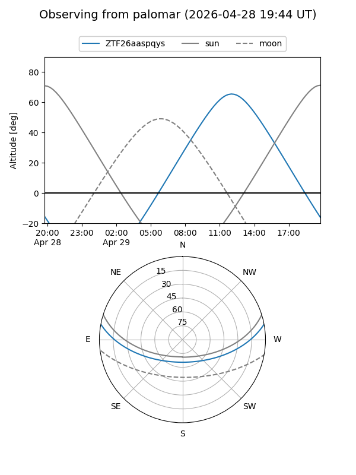
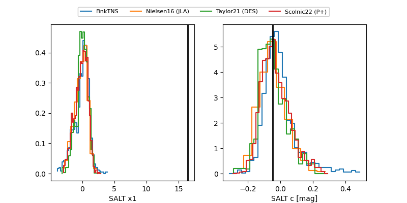

ZTF26aaspqys
Target ZTF26aaspqys at 2026-04-29 10:51
Aliases and brokers:
FINK: link
Lasair: link
ALeRCE: link
alt names
ZTF26aaspqys (ztf,fink_ztf)
Coordinates:
equatorial (ra, dec) = 280.7306,+8.86485
equatorial (HMS+DMS) = 18:42:55.34,+08:51:53.46
galactic (l, b) = (39.8851,+5.90823)
Flags:
Photometry:
last ztfr=19.27
4 ztfr detections
Lightcurve

Visibility


Additional plots
